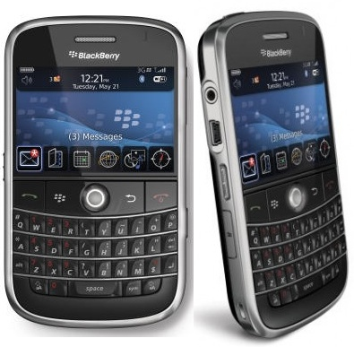

PhoneGap: BlackBerry
Java, J2ME, RIM's browser implementation


Fil Maj
Web & Mobile Development
Nitobi
Fil Maj
Web & Mobile Development
Nitobi
Browser is limited. No XUI, limited DOM implementation and primitive JavaScript error handling. More on this in a bit.
For PhoneGap to achieve its goal, it needs to have a consistent API across platforms.